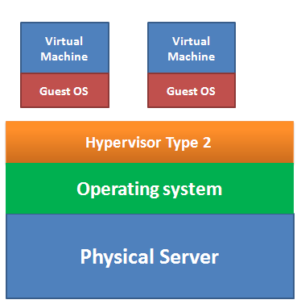

CLOUD COMPUTING
Indice
Modelli Cloud
Deployment Models
Componenti Cloud
Cloud Layers
Virtualizzazione
Concetti fondamentali
Domande e Risposte
Servizi AWS
### I 3 modelli fondamentali di servizi cloud - **Infrastructure as a Service** (<a href="#iaas">_IaaS_</a>) _Noleggio di elaborazione, archiviazione, capacità di rete e altre risorse informatiche fondamentali._ - **Platform as a Service** (<a href="#paas">_PaaS_</a>) _Distribuire le applicazioni create dal cliente su un cloud_ - **Software as a Service** (<a href="#saas">_SaaS_</a>) _Utilizzare le applicazioni fornite dal fornitore su una rete_
### IaaS ### #### _Infrastructure as a Service_ [**HOST**] _Modello nel quale vengono messi a disposizione risorse hardware virtualizzate, affinché l’utilizzatore possa creare e gestire, secondo le proprie esigenze, una propria infrastruttura sul cloud, senza preoccuparsi di dove siano allocate le risorse. Esempi: Amazon Elastic Cloud Compute (EC2), Amazon Simple Storage Service (S3), Amazon Virtual Private Cloud (VPC), Google Cloud Engine, Google Cloud Storage, ecc._
### PaaS ### #### _Platform as a Service_ [**BUILD**] _Modello nel quale vengono situati i servizi di piattaforme online, grazie al quale un utente, di solito uno sviluppatore, può effettuare il deployment di applicazioni e servizi web che intende fornire. In questo caso, l’utilizzatore può sviluppare ed eseguire le proprie applicazioni attraverso gli strumenti forniti dal provider, il quale garantisce il corretto funzionamento dell’infrastruttura sottostante. Esempi: Amazon Relational Database Service (RDS), Amazon DynamoDB, Amazon API Gateway, Google Cloud App Engine, Google Cloud SQL, Google Cloud Datastore, ecc._
### SaaS #### _Software as a Service_ [**CONSUME**] _Modello che racchiude applicativi e sistemi software, accessibili da un qualsiasi tipo di dispositivo (computer, smartphone, tablet, ecc.), attraverso il semplice utilizzo di un’interfaccia client. In questo modo, l’utilizzatore non deve preoccuparsi di gestire le risorse e l’infrastruttura, in quanto controllati dal provider che li fornisce. Esempi: G Suite, Ms Office 365._
![servizi_cloud ][sc] [sc]: img/paas.jpg "servizi_cloud"
### Modelli di Cloud Deployment Il _**cloud computing**_ può essere classificato in quattro modelli di deployment fondamentali - <a href="#private_cloud">Privato</a> - <a href="#public_cloud">Pubblico</a> - <a href="#hybrid_cloud">Ibrido</a> - <a href="#community_cloud">Community</a>
### Cloud Pubblico (1/2) Il cloud pubblico è forse il più semplice di tutti i deployment cloud. Tramite una rete, un cloud provider distribuisce a più clienti risorse di elaborazione, servizi e piattaforme, sviluppate utilizzando hardware di proprietà del provider stesso, che si occupa anche della gestione. I cloud pubblici hanno sempre un’architettura multi-tenant, con più istanze virtuali in un’unica istanza del software. Ogni tenant, o client, comprende un gruppo di utenti che condividono l’accesso comune all’istanza server con privilegi specifici. I clienti non possiedono i gigabyte di storage in cui i propri dati vengono sottoposti a backup, non gestiscono le operazioni presso la server farm in cui è attivo l’hardware, e non determinano in che modo le loro piattaforme, applicazioni o servizi cloud vengono protetti o gestiti. Se il cliente necessita di maggiori risorse, piattaforme o servizi, corrisponderà a un fornitore di cloud pubblico una tariffa oraria o per byte, per ottenere libero accesso a tali risorse.
### Cloud Pubblico (2/2) I provider di cloud pubblici dispongono di reti estese che (in teoria) consentono ai propri clienti l’accesso illimitato alle risorse. Il cliente versa una tariffa in base al consumo ed ha la possibilità di richiedere risorse aggiuntive. In genere i costi iniziali sono bassi, perché non sono necessari investimenti in soluzioni hardware. I costi d’esercizio possono essere invece meno prevedibili, anche quando i picchi d’utilizzo sono anticipati. Questo è uno dei vantaggi del cloud pubblico: si paga di più solo quando si consuma più potenza di elaborazione. La condivisione delle risorse può invece rappresentare un aspetto negativo. Gli ambienti multi-tenant sono esposti a più rischi in termini di sicurezza; inoltre, il cloud pubblico potrebbe non avere le necessarie caratteristiche di conformità per i carichi di lavoro sensibili, che devono essere isolati. Ecco perché è importante conoscere le proprie responsabilità e distribuire conseguentemente i carichi di lavoro.
### Cloud Privato I cloud privati sono simili a quelli pubblici, ma i sistemi sono destinati a un unico cliente con accesso isolato. Come i cloud pubblici, quelli privati vengono distribuiti tramite ambienti self-service, a volte anche via Internet, ma sono protetti da reti, impostazioni di privacy e sistemi di gestione privati. I cloud privati offrono un ambiente versatile e personalizzabile per l’esecuzione dei carichi di lavoro specifici dell’azienda; sono quindi perfetti per le applicazioni aziendali esistenti il cui funzionamento non è garantito nei cloud pubblici. Rispetto ai server virtuali dedicati (che non sono cloud), i cloud pubblici hanno un’efficienza superiore in termini di capacità, ma non possono competere con le risorse infinite del cloud pubblico. Se necessario, i proprietari di cloud privati possono ottenere più risorse cloud, ma ciò implica l’acquisto di nuovo hardware (**on-premise**), o il noleggio di un’ulteriore infrastruttura privata da un fornitore (**off-premise**); entrambe le opzioni richiedono più tempo e denaro rispetto all’impiego di un cloud pubblico.
### Cloud Ibrido (1/2) Il cloud ibrido sfrutta i vantaggi del cloud pubblico e privato. È una combinazione di uno o più ambienti cloud pubblici e privati, orchestrati da un software di gestione e automazione che consente di eseguire la migrazione di carichi di lavoro, risorse, piattaforme e applicazioni tra diversi ambienti. Può includere inoltre infrastruttura on-premise, virtualizzazione tradizionale, server bare-metal e container, elementi che tuttavia devono essere aggiunti insieme ai cloud pubblici e privati. In assenza di un cloud, si parla semplicemente di ambiente ibrido e non di cloud ibrido.
### Cloud Ibrido (2/2) Nel cloud ibrido i singoli ambienti cloud continuano ad essere entità uniche e separate, ma offrono potenziali opzioni di collegamento, integrazione e portabilità tra i cloud. Grazie a questa architettura separata, ma connessa, le aziende possono gestire i carichi di lavoro nel modo più efficace, poiché consente di eseguire i carichi di lavoro critici nel cloud privato, quelli meno sensibili nel cloud pubblico, e di ottenere risorse da ogni ambiente in base alla necessità. Ad esempio, la connessione del cloud privato a un cloud pubblico agevola la scalabilità durante i periodi di picco o di interruzioni prevedibili, perché consente una rapida ridistribuzione dei carichi di lavoro nel cloud pubblico. È possibile ottenere la scalabilità verticale dell’infrastruttura (aggiungendo funzioni di virtualizzazione), e orizzontale (optando per la soluzione cloud più adatta all’utilizzo). È proprio la possibilità di scelta che caratterizza i cloud ibridi, ma la scelta è flessibile solo se lo sono i sistemi di integrazione e automazione che li uniscono.
### Community Cloud Nel modello cloud community, l'infrastruttura cloud è condivisa da un gruppo con comuni esigenze. Ad esempio, varie agenzie all'interno del Governo dello Stato operano secondo linee guida simili e quindi possono condividere un cloud. Questo modello è più economico del cloud privato perché il costo è condiviso dagli utenti della Community ed ha un livello più elevato di privacy e di sicurezza.
Modelli di Cloud Deployment
### Componenti Cloud I componenti fondamentali di una _**piattaforma cloud**_ sono: - <a href="#applications_component">Applicazioni</a> - <a href="#automation_component">Automazione</a> - <a href="#computing_component">Calcolo</a> - <a href="#networking_component">Networking</a> - <a href="#security_component">Sicurezza</a> - <a href="#storage_component">Storage</a> - <a href="#virtualization_component">Virtualizzazione</a>
#### Applicazioni Il termine applicazione è ampio ma in questo contesto viene utilizzato per indicare le applicazioni utente, inclusi database, server web, e-mail, big data e altri software aziendali.
#### Automazione L'automazione gioca un ruolo fondamentale nei moderni servizi cloud. I sistemi software di automazione operano nel data center di un provider cloud che automatizza la distribuzione e il monitoraggio delle offerte cloud. Tutto (rete, storage e calcolo) può essere virtualizzato e automatizzato. Ciò rende possibile una rapida implementazione e consente agli utenti di avere il controllo sull'utilizzo del cloud.
#### Calcolo Le risorse di calcolo sono l'elaborazione centrale effettiva di dati e applicazioni su un server fisico o virtualizzato che esegue una varietà di sistemi operativi.
#### Networking I servizi cloud di rete includono switching e routing tradizionali, nonché servizi come il bilanciamento del carico, DNS, DHCP e reti private virtuali.
#### Sicurezza Proprio come la sicurezza è una componente fondamentale nei data center privati e aziendali, così è nel cloud. I fornitori di servizi cloud offrono molti servizi di sicurezza, tra cui firewall, controllo degli accessi, sistemi di rilevamento e prevenzione delle intrusioni e servizi di crittografia.
#### Storage Grandi quantità di dispositivi e _storage area networks_ esistono nel cloud per l'utilizzo da parte dei consumatori di servizi cloud. I supporti di memorizzazione comuni sono unità a stato solido (SSD) e unità fisiche magnetiche. I sistemi di archiviazione includono sistemi basati su oggetti, blocchi e file. Alcuni storage sono ottimizzati per alta disponibilità e durata, e altri sono meno costosi e offrono un'archiviazione a lungo termine.
#### Virtualizzazione La virtualizzazione è la capacità di prendere risorse di data center fisici come RAM, CPU, storage e networking e creare una rappresentazione software di tali risorse in offerte cloud su larga scala. Queste risorse virtualizzate vengono utilizzate da un hypervisor per l'allocazione a computer virtualizzati o macchine virtuali come vengono comunemente chiamate, per l'elasticità dinamica delle moderne offerte cloud.
### I livelli risultanti di un sistema cloud E’ possibile descrivere l’architettura di un ambiente di cloud computing modellizzandola in cinque strati: - <a href="#facility_layer">Facility layer</a> - <a href="#hardware_layer">Hardware layer</a> - <a href="#infrastructure_layer">Infrastructure layer</a> - <a href="#platform_layer">Platform layer</a> - <a href="#application_layer">Application layer</a>
#### Facility layer Riscaldamento, ventilazione, climatizzazione, energia, comunicazioni e altri aspetti della pianta fisica comprendono lo strato più basso, lo strato della struttura
#### Hardware layer Questo strato è responsabile della gestione delle risorse fisiche della cloud, incluse le macchine fisiche (server), i routers, gli switches e i sistemi di alimentazione e raffreddamento. Lo strato hardware è tipicamente implementato nei data centers. Un data center contiene migliaia di server che sono organizzati in racks. La gestione hardware comprende operazioni di configurazione, realizzazione di infrastrutture fault-tolerant, gestione del traffico di rete e gestione delle risorse.
#### Infrastructure layer Chiamato anche strato di virtualizzazione, questo strato fornisce le risorse fondamentali agli strati di più alto livello, generalmente servizi computazionali, data storage e servizi di rete, attraverso la creazione di pool di memoria e risorse computazionali partizionando le risorse fisiche attraverso tecnologie di virtualizzazione come Xen KVM and VMware. L’infrastructure layer è un componente essenziale del cloud computing, perchè molte caratteristiche chiave, come l’assegnamento dinamico delle risorse, sono disponibili soltanto attraverso il meccanismo di virtualizzazione.
#### Platform layer Gli utenti di questo strato sono gli sviluppatori, che implementano le loro applicazioni e ne fanno il deploying sulla cloud. Gli infrastructure providers supportano queste operazioni fornendo dei framework di sviluppo che consistono in insiemi di API per facilitare l’interazione con l’ambiente cloud o il cui scopo è quello di minimizzare il peso del deploy delle applicazioni all’interno delle macchine virtuali. Ne sono un esempio i servizi di auto-scaling e load-balancing offerti da Amazon, che si occupano di ottimizzare l’allocazione dinamica delle istanze virtuali in modo trasparente alle applicazioni. In generale gli sviluppatori hanno la possibilità di integrare on-demand questi servizi nelle loro applicazioni.
#### Application layer Questo è lo strato con cui interagiscono gli utilizzatori finali, i quali accedono ai servizi offerti attraverso il web. Il deploy di una cloud application viene eseguito sull’infrastruttura offerta da un infrastructure provider in modo che gli sviluppatori possano apportare modifiche al software o aggiungere nuove funzionalità senza che si renda necessaria la distribuzione di update o service pack. A questo livello diventano critici gli aspetti di sicurezza e di qualità del servizio, che vengono regolati attraverso i contratti di Service Level Agreement (SLA).
### VIRTUALIZZAZIONE La virtualizzazione è un processo di separazione delle risorse hardware fisiche in un insieme di risorse virtuali che possono funzionare in modo indipendente come risorsa di calcolo e fornire CPU, RAM, storage e così via personalizzati e dedicati. Ogni server e le sue risorse vengono creati in un ambiente isolato. Ogni ambiente isolato viene creato a partire da un sistema operativo fisico e dalla configurazione hardware sottostante. Tali risorse sono chiamate Macchine Virtuali(VM) o istanze. La virtualizzazione si ottiene utilizzando un software di virtualizzazione che mantiene i livelli astratti e virtuali sopra l'hardware fisico.
### Virtualizzazione ### #### Classificazione in base al software di virtualizazione #### - **Classe 1 (_bare metal_)** Un software di virtualizzazione molto sottile chiamato _**hypervisor**_ è installato direttamente sul server fisico. Il cloud AWS utilizza un hypervisor Xen personalizzato. Gli hypervisor di classe 1 sono più veloci degli hypervisor di classe 2. Esempi di hypervisor di classe 1 sono Xen, OpenStack, Hyper-V e vSphere. - **Classe 2 (_hosted hypervisor_)** Questi tipi di hypervisor sono installati sopra il sistema operativo di base come Windows o Linux. Esempi di hypervisor di classe 2 sono VMware Workstation, VirtualBox e Virtual PC.
### Virtualizzazione ### #### Confronto fra Hypervisor di tipo 1 e di tipo 2 #### <img src="img/type-1-hypervisor.png" /> 
### Virtualizzazione ### #### Classificazione in base ai metodi di virtualizzazione - **OS-level** La macchina host e la VM hanno lo stesso SO e lo stesso _patch level_ - **Software** (_hypervisor_) * _Binary translation_: particolari istruzioni della VMs sono intercettate e rimpiazzate dalle chiamate all'hypervisor * _Para Virtualization Mode (PVM)_: Il SO Guest viene modificato. * _Hardware Assisted Virtual Machine (HVM)_: Crea un layer astratto tra host e guest. Usa speciali istruzioni della CPU per incrementare le performance - **Emulazione Hardware** Permette di far girare un SO non supportato come per esempio Android su PC
### Concetti del Cloud ### - <a href="#high_availability">High Availability</a> - <a href="#fault_tolerance">Fault Tolerance</a> - <a href="#scalability">Scalabilità</a> - <a href="#elasticity">Elasticità</a>
#### High Availability #### La possibilità di raggiungere una risorsa (file, servizio, ecc.) sul cloud da più dispositivi (computer, smartphone, ecc.) e da posizioni diverse (casa, ufficio, ecc.)
#### Fault Tolerance #### La replicazione delle risorse su più server fisici rende bassissima la probabilità di perdita di file o di interruzione di un servizio
#### Scalabilità #### **Elasticità** e **scalabilità** descrivono il modo in cui l'infrastruttura cloud è in grado di espandersi e ridursi in base al carico di lavoro dinamico effettivo **Scalabilità** significa aggiungere risorse all'istanza esistente (_scale up_) o in parallelo a un'istanza esistente (_scale out_). La **Scalabilità** è essenziale per raggiungere l'**Elasticità**: - **Scale up (_Vertical Scaling_)** La modifica del tipo di istanza da piccolo a grande (ovvero la modifica a più memoria o calcolo). Di solito il ridimensionamento viene fatto per ottenere più calcolo e memoria sulla stessa istanza. - **Scale out (_Horizontal Scaling_)** Posizionare una o più nuove istanze in parallelo all'istanza esistente.
#### Elasticità #### In fisica, l'elasticità può essere definita come la capacità di un materiale di espandersi e ridursi i base alle condizioni esterne. Allo stesso modo, nell'infrastruttura cloud, l'elasticità può essere definita come la capacità di fornire automaticamente risorse aggiuntive per soddisfare l'elevata domanda e ridurre il numero esteso di risorse quando la domanda diminuisce.
### Domande e Risposte ### #### Indice (1/2) #### <ul> <li><a href="#/d1">Che cosa significano le sigle IaaS, PaaS, SaaS?</a></li> <li><a href="#/d2">Spiegare le differenze fra i modelli IaaS, PaaS, SaaS.</a></li> <li><a href="#/d3">Fare alcuni esempi di IaaS, PaaS e SaaS.</a></li> <li><a href="#/d4">Che cos’è un servizio serverless?</a></li> <li><a href="#/d5">Cos’è un cloud ibrido?</a></li> <li><a href="#/d6">Vantaggi e svantaggi di Private Cloud, Public Cloud e Hybrid Cloud.</a></li> <li><a href="#/d7">Come funziona la virtualizzazione di tipo 1?</a></li> <li><a href="#/d8">Come funziona la virtualizzazione di tipo 2?</a></li> </ul>
### Domande e Risposte ### #### Indice (2/2) #### <ul> <li><a href="#/d9">Che cos’è un Hypervisor?</a></li> <li><a href="#/d10">Che cos’è un Load Balancer?</a></li> <li><a href="#/d11">Spiegare i concetti di scalabilità ed elasticità.</a></li> <li><a href="#/d12">Che cosa si intende per scalabilità verticale e scalabilità orizzontale?</a></li> <li><a href="#/d13">Che cosa si intende per high availability e fault tolerance? Come vengono realizzate?</a></li> </ul>
#### Che cosa significano le sigle IaaS, PaaS, SaaS? #### - _**Infrastructure-as-a-Service (IaaS)**_ è un modello nel quale vengono messi a disposizione risorse hardware virtualizzate, affinché l’utilizzatore possa creare e gestire, secondo le proprie esigenze, una propria infrastruttura sul cloud, senza preoccuparsi di dove siano allocate le risorse. - _**Platform-as-a-Service (PaaS)**_ è un modello nel quale vengono situati i servizi di piattaforme online, grazie al quale un utente, di solito uno sviluppatore, può effettuare il deployment di applicazioni e servizi web che intende fornire. In questo caso, l’utilizzatore può sviluppare ed eseguire le proprie applicazioni attraverso gli strumenti forniti dal provider, il quale garantisce il corretto funzionamento dell’infrastruttura sottostante. - _**Software-as-a-Service (Saas)**_ è un modello che racchiude applicativi e sistemi software, accessibili da un qualsiasi tipo di dispositivo (computer, smartphone, tablet, ecc.), attraverso il semplice utilizzo di un’interfaccia client. In questo modo, l’utilizzatore non deve preoccuparsi di gestire le risorse e l’infrastruttura, in quanto controllati dal provider che li fornisce
#### Spiegare le differenze fra i modelli IaaS, PaaS, SaaS. #### A fare la differenza è la tipologia di servizio erogabile. Prima ancora, è importante avere chiaro i componenti principali di una piattaforma cloud sulla quale si appoggiano i provider per distribuire i servizi on demand. Dal punto di vista concettuale, IaaS, SaaS e PaaS possono essere considerati come tre livelli di astrazione, diversificati a seconda del tipo di servizio offerto e dal tipo di utente. Dunque, è possibile mettere in relazione tali modelli: un servizio offerto da un IaaS supporta un servizio PaaS, che a sua volta supporta un servizio SaaS.
#### Fare alcuni esempi di IaaS, PaaS e SaaS. #### - **IaaS** (Amazon Elastic Cloud Compute (EC2), Amazon Simple Storage Service (S3), Amazon Virtual Private Cloud (VPC), Google Cloud Engine, Google Cloud Storage, ecc.) - **PaaS** (Amazon Relational Database Service (RDS), Amazon DynamoDB, Amazon API Gateway, Google Cloud App Engine, Google Cloud SQL, Google Cloud Datastore, ecc.) - **SaaS** (G Suite)
#### Che cos’è un servizio serverless? #### Un'architettura per un servizio serverless è un metodo di creazione ed esecuzione di applicazioni e servizi che non richiede la gestione di un'infrastruttura. Le applicazioni saranno comunque eseguite su server, ma la gestione di questi ultimi sarà a carico di AWS. Non sarà più necessario allocare, ricalibrare e mantenere server per eseguire applicazioni, database e sistemi di storage.
#### Cos’è un cloud ibrido? #### Nel cloud ibrido la gestione delle macchine e delle risorse è assolutamente dinamica e flessibile. Sfruttando il meglio delle logiche dell’on demand, del pay per use e dell’As a Service, il governo dei sistemi IT acquisisce una marcia in più. In base alle esigenze, alle priorità e alle gerarchie di attività, infatti, è possibile programmare la combinazione ideale, modulando un Software Defined Data Center massimamente scalabile e performante
#### Vantaggi e svantaggi di Private Cloud, Public Cloud e Hybrid Cloud. #### Utilizzando un servizio di _**Public Cloud**_ non bisogna preoccuparsi della gestione e manutenzione dei sistemi, inoltre non ci sono costi iniziali, e quelli di mantenimento sono generalmente minori, non bisogna preoccuparsi di sistemi di backup e la scalabilità è garantita Nei _**Private Cloud**_ si può ottimizzare la gestione delle risorse in base alle proprie esigenze, bisogna però tenere in conto costi maggiori e sistemi di backup. In alternativa si può utilizzare un sistema _**ibrido**_ che consente di convogliare i vantaggi dei 2 sistemi e offre la massima flessibilità
#### Come funziona la virtualizzazione di tipo 1? #### _(**bare metal**)_ Un software di virtualizzazione molto sottile chiamato hypervisor è installato direttamente sul server fisico. Il cloud AWS utilizza un hypervisor Xen personalizzato. Gli hypervisor di classe 1 sono più veloci degli hypervisor di classe 2. Esempi di hypervisor di classe 1 sono Xen, OpenStack, Hyper-V e vSphere.
#### Come funziona la virtualizzazione di tipo 2? #### _(**hosted hypervisor**)_ Questi tipi di hypervisor sono installati sopra il sistema operativo di base come Windows o Linux. Esempi di hypervisor di classe 2 sono VMware Workstation, VirtualBox e Virtual PC.
#### Che cos’è un Hypervisor? #### In informatica l’hypervisor, conosciuto anche come virtual machine monitor, è il componente centrale e più importante di un sistema basato sulle macchine virtuali.
#### Che cos’è un Load Balancer? #### In informatica il load balancing è una tecnica informatica utilizzata nell'ambito dei sistemi informatici che consiste nel distribuire il carico di elaborazione di uno specifico servizio, ad esempio la fornitura di un sito web, tra più server, aumentando in questo modo scalabilità e affidabilità dell'architettura nel suo complesso.
#### Spiegare i concetti di scalabilità ed elasticità. #### Elasticità e scalabilità descrivono il modo in cui l'infrastruttura cloud è in grado di espandersi e ridursi in base al carico di lavoro dinamico effettivo. Scalabilità significa aggiungere risorse all'istanza esistente (**scale up**) o in parallelo a un'istanza esistente (**scale out**). In fisica, l'elasticità può essere definita come la capacità di un materiale di espandersi e ridursi i base alle condizioni esterne. Allo stesso modo, nell'infrastruttura cloud, l'elasticità può essere definita come la capacità di fornire automaticamente risorse aggiuntive per soddisfare l'elevata domanda e ridurre il numero esteso di risorse quando la domanda diminuisce.
#### Che cosa si intende per scalabilità verticale e scalabilità orizzontale? #### La **scalabilità orizzontale** è la capacità di aumentare la capacità collegando più entità hardware o software in modo che funzionino come una singola unità logica. La **scalabilità verticale**, d’altra parte, aumenta la capacità aggiungendo più risorse, ad esempio più memoria o una CPU aggiuntiva , a una macchina.
#### Che cosa si intende per high availability e fault tolerance? Come vengono realizzate? #### _**high availability**_: La possibilità di raggiungere una risorsa (file, servizio, ecc.) sul cloud da più dispositivi (computer, smartphone, ecc.) e da posizioni diverse (casa, ufficio, ecc.) _**fault tolerance**_ :La replicazione delle risorse su più server fisici rende bassissima la probabilità di perdita di file o di interruzione di un servizio
### Servizi AWS ### #### Domande e Risposte (1/2) #### <ul> <li><a href="#/c1">Che cos’è una regione di disponibilità?</a></li> <li><a href="#/c2">Che cosa si intende per Edge Location?</a></li> <li><a href="#/c3">Quali sono i principali servizi di calcolo?</a></li> <li><a href="#/c4"> Che cosa si intende per istanza?</a></li> <li><a href="#/c5">Che cos’è un’istanza on demand?</a></li> <li><a href="#/c6">Che cos’è il modello di condivisione delle responsabilità?</a></li> <li><a href="#/c7">Che cos’è Elastic BeanStalk?</a></li> <li><a href="#/c8">Che cos’è Amazon Lambda?</a></li> <li><a href="#/c9">Quali sono i principali servizi di storage?</a></li> <li><a href="#/c10">Che cos’è un bucket?</a></li> </ul>
### Servizi AWS ### #### Domande e Risposte (2/2) #### <ul> <li><a href="#/c11">Quali sono i principali servizi di networking?</a></li> <li><a href="#/c12">Che cos’è un VPC?</a></li> <li><a href="#/c13">Che cos’è Route 53?</a></li> <li><a href="#/c14">Che cos’è un CDN? </a></li> <li><a href="#/c15">Che cos’è Amazon Aurora?</a></li> <li><a href="#/c16">Che cos’è IAM (Identity and Access Management)?</a></li> <li><a href="#/c17">Che cos’è Amazon Cognito?</a></li> <li><a href="#/c18">Che cos’è un security group?</a></li> <li><a href="#/c19">Che cos’è Amazon Kinesis? </a></li> </ul>
#### Che cos’è una regione di disponibilità? #### All’interno di ogni regione sono presenti delle zone di disponibilità. Quest’ultime contengono da 1 a 6 data center completamente ridondati per quanto riguarda alimentazione e networking. Attualmente abbiamo 55 zone di disponibilità all’interno delle rispettive 18 regioni. Le zone di disponibilità sono progettate in maniera tale che il fallimento di una non si ripercuote sulle altre. Il vantaggio più grande di avere delle zone di disponibilità è di poter replicare i dati su quest’ultime in maniera sincrona così che in caso di “down” di una zona, i dati saranno presenti sulle altre zone senza alcun disservizio. Questo permette di creare delle infrastrutture in alta affidabilità.
#### Che cosa si intende per Edge Location? #### Una Location Edge è sostanzialmente una piccola configurazione in diverse posizioni che fornisce connettività a bassa latenza fornendo contenuti statici che saranno disponibili dalla posizione più vicina della richiesta. Quello che succede è che invece di ottenere le informazioni dalla fonte, si dirige semplicemente verso la posizione del bordo più vicino e fornisce le informazioni riducendo la latenza. In questo modo il tempo di accesso è inferiore e la risposta è più veloce.
#### Quali sono i principali servizi di calcolo? #### - EC2 - Lightsail - Elastic Container Service - EKS - Lambda - Batch - Elastic Beanstalk
#### Che cosa si intende per istanza? #### Amazon EC2 offre un’ampia gamma di tipi di istanze ottimizzati per soddisfare diversi casi d’uso. I tipi di istanze comprendono diverse combinazioni di capacità di CPU, memoria, storage e di rete, offrendo la flessibilità di poter scegliere la combinazione di risorse adeguata per le proprie applicazioni. Ogni tipo di istanza include una o più dimensioni di istanza, permettendo di ridimensionare le proprie risorse in base ai requisiti del carico di lavoro. Creare un’istanza è un processo relativamente rapido. E’ necessario solo specificare quali caratteristiche e risorse dovrà avere la nostra istanza: - Tipo di istanza. - Sistema operativo. - Software installato. - Memoria, CPU, storage,network.
#### Che cos’è un’istanza on demand? #### Le istanze on demand ti consentono di pagare solo per le istanze EC2 effettivamente utilizzate. L'uso di istanze on demand risparmia all'utente i costi e la complessità implicati nella pianificazione, nell'acquisto e nella manutenzione di hardware, trasformando costi fissi normalmente elevati in spese variabili molto più ridotte.
#### Che cos’è il modello di condivisione delle responsabilità? #### Questo modello condiviso può aiutare ad alleviare il fardello operativo del cliente in quanto AWS aziona, gestisce e controlla i componenti del sistema operativo host e il livello di virtualizzazione fino alla sicurezza fisica delle strutture in cui il servizio opera. Il cliente si assume la responsabilità e la gestione del sistema operativo guest (inclusi gli aggiornamenti e le patch di sicurezza), di altro software applicativo nonché della configurazione del firewall del gruppo di sicurezza fornito da AWS.
#### Che cos’è Elastic BeanStalk? #### AWS Elastic Beanstalk è un servizio di semplice utilizzo per distribuire e ridimensionare applicazioni e servizi Web sviluppati con Java, .NET, PHP, Node.js, Python, Ruby, Go e Docker su server comuni come Apache, Nginx, Passenger e IIS. Caricando semplicemente il proprio codice, Elastic Beanstalk gestisce automaticamente l'implementazione, da provisioning di capacità e autoscaling al monitoraggio della salute dell'applicazione. Al contempo, l'utente mantiene il completo controllo sulle risorse AWS su cui si basa la sua applicazione e può accedere in qualsiasi momento alle risorse implicate.
#### Che cos’è Amazon Lambda? #### AWS Lambda consente di eseguire codice senza dover effettuare il provisioning né gestire server. I prezzi sono calcolati in base al tempo effettivo di elaborazione. Con Lambda, puoi eseguire codice per qualsiasi tipo di applicazione o servizio di back-end, senza bisogno di amministrazione. Una volta caricato il codice, Lambda si prende carico delle azioni necessarie per eseguirlo e calibrare le risorse con la massima disponibilità. Puoi configurare il codice in modo che venga attivato automaticamente da altri servizi AWS oppure che venga richiamato direttamente da qualsiasi app Web o mobile.
#### Quali sono i principali servizi di storage? #### AWS offre una gamma completa di servizi di storage nel cloud per supportare i requisiti di conformità sia di applicazioni sia di archiviazione. - Amazon EC2 - Amazon S3 - Amazon FSx for Lustre - AWS Storage Gateway
#### Che cos’è un bucket? #### I dati sono archiviati come oggetti all'interno di risorse chiamate "bucket". Per caricare i dati (foto, video, documenti e così via) in Amazon S3, occorre prima creare un bucket S3 in una delle regioni AWS. È possibile quindi caricare un numero qualsiasi di oggetti nel bucket. In termini di implementazione, i bucket e gli oggetti sono risorse e Amazon S3 fornisce API per la loro gestione.
#### Quali sono i principali servizi di networking? #### - VPC - CloudFront - Route 53 - API Gateway - Direct Connect
#### Che cos’è un VPC? #### Amazon Virtual Private Cloud (Amazon VPC), consente di avviare le risorse AWS in una rete virtuale definita. Questa rete virtuale è simile a una comune rete da gestire all'interno del proprio data center, ma con i vantaggi dell'infrastruttura scalabile di AWS.
#### Che cos’è Route 53? #### Amazon Route 53 è un servizio Web di DNS (Domain Name System) altamente scalabile e disponibile. È concepito per fornire a sviluppatori e aziende un modo estremamente affidabile ed economicamente vantaggioso per instradare gli utenti finali su applicazioni Internet, traducendo nomi come "www.esempio.com" in indirizzi IP numerici come 192.0.2.1, che i computer impiegano per collegarsi tra loro. Amazon Route 53 è inoltre completamente compatibile con IPv6.
#### Che cos’è un CDN? #### CDN, ossia di reti per la distribuzione dei contenuti. Una rete per la distribuzione dei contenuti è una piattaforma di server estremamente distribuita per la delivery di contenuti, tra cui applicazioni web e streaming media. Disseminata in moltissime ubicazioni fisiche e di rete, in modo da poter rispondere direttamente alle richieste degli utenti finali in fatto di contenuti web e distribuzione veloce e sicura di contenuti multimediali, questa rete di server funge in pratica da intermediario tra un server di contenuti, denominato anche origine, e i relativi utenti finali o client.
#### Che cos’è Amazon Aurora? #### Amazon Aurora è un database relazionale compatibile con MySQL e PostgreSQL creato per il cloud che unisce le prestazioni e la disponibilità dei database enterprise alla semplicità e al costo ridotto dei database open source. Amazon Aurora è cinque volte più veloce dei database MySQL standard e tre volte più veloce dei database PostgreSQL standard. Offre la sicurezza, la disponibilità e l'affidabilità dei database commerciali a un decimo del costo.
#### Che cos’è IAM (Identity and Access Management)? #### Amazon IAM è un servizio che permette di definire ciò che un utente o un gruppo può fare relativamente alle risorse nel cloud AWS. Inoltre esso permette di specificare a quale servizio può accedere un determinato utente o gruppo di utenti e che tipo di accesso possiedono (“administrator”, sola lettura, ecc). Si ha quindi il pieno controllo sulle autorizzazioni e autenticazioni all’interno del cloud. IAM è gestibile tramite CLI, Console IAM, API.
#### Che cos’è Amazon Cognito? #### Cognito è un servizio legato alla sicurezza dei dati, fornisce un sistema di autenticazione, autorizzazione e gestione degli utenti per le applicazioni web e mobile. Esso è composto da: - **USER POOL**: directory utente all’interno del servizio: permette agli utenti di effettuare il “sign-in” all’interno della nostra WEB o MOBILE app. - **IDENTITY POOL**: ci permette di creare delle identità univoche e di gestire l’accesso degli utenti ai vari servizi AWS.
#### Che cos’è un security group? #### Possiamo immaginarlo come un firewall virtuale che può essere associato ad una o più istanze VPC. Il filtraggio attuato del security group è di tipo stateful ovvero mantiene traccia dello stato delle connessioni tramite una tabella di supporto, per cui il traffico di ritorno di una connessione è sempre permesso. Notare che è applicato all’istanza e non alla sottorete. Ogni istanza accetta un massimo di 5 security group.
#### Che cos’è Amazon Kinesis? #### Semplifica raccolta, elaborazione e analisi di flussi di dati in tempo reale, per ottenere analisi tempestive e reagire rapidamente alle nuove informazioni. Offre un'elaborazione a costi contenuti di flussi di dati su qualsiasi scala. Permette di acquisire dati in tempo reale, ad esempio video, audio, log di applicazioni, clickstream di siti Web e dati di telemetria di IoT, per apprendimento automatico, analisi e altre applicazioni. Inoltre consente di elaborare e analizzare i dati nel momento in cui arrivano, con risposte istantanee non ritardate dall'attesa che venga completata la ricezione delle informazioni.